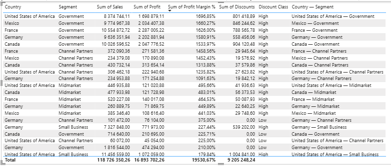
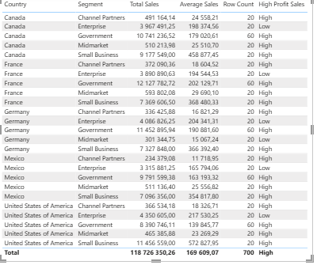
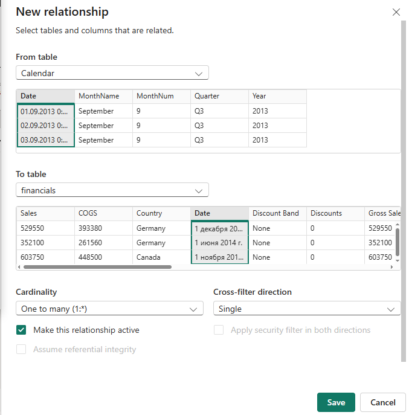
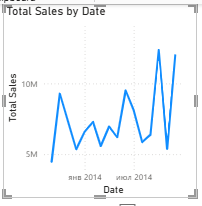
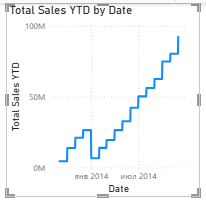
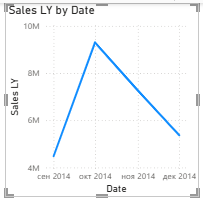

Зертханалық жұмыс № 12
Жұмыстың мақсаты
DAX тілін пайдаланып есептелетін бағандар мен өлшемдерді құруды меңгеру, динамикалық аналитикалық есептеулер жүргізу, сүзгілеу контекстін басқару және Time Intelligence құралдары арқылы уақыт бойынша көрсеткіштерді талдау дағдыларын қалыптастыру.
Зертханалық жұмысты орындағаннан кейін студент:
• DAX есептелетін бағандары мен өлшемдерінің айырмашылығын ажырата білуі;
• DIVIDE, IF функцияларын және мәтіндік біріктіруді пайдаланып есептелетін бағандар құра білуі;
• SUM, AVERAGE және COUNTROWS функциялары арқылы өлшемдер құра білуі;
• жол контексті мен сүзгі контекстін түсінуі;
• CALCULATE функциясын және ALL, ALLEXCEPT, KEEPFILTERS сүзгі модификаторларын қолдануы;
• срездер мен сүзгілерді қолданғанда өлшемдердің динамикалық өзгеруін тексеруі;
• уақыттық талдау үшін күнтізбелік кестені пайдалануы;
• Time Intelligence көрсеткіштерін құруы;
• DAX көрсеткіштерін кестелерде, матрицаларда, карточкаларда және графиктерде қолдануы;
• есептеу нәтижелері бойынша аналитикалық қорытындылар жасауы тиіс.
Қажетті материалдар
• Power BI Desktop;
• № 10–11 зертханалық жұмыстарда дайындалған Power BI (.pbix) файлы;
• қажет болған жағдайда бастапқы деректер құрылымын тексеруге арналған Financial Sample.xlsx деректер жиынтығы.
Қысқаша теориялық мәліметтер
1. DAX тілінің мақсаты
DAX (Data Analysis Expressions) — бастапқы деректер көзін өзгертпей, аналитикалық модельде туынды көрсеткіштер мен қосымша белгілерді жасауға арналған Power BI өрнектер тілі. DAX көмегімен есептелетін бағандар, өлшемдер және есептелетін кестелер құрылады.
2. Есептелетін бағандар мен өлшемдер
Есептелетін баған модель жаңартылған кезде кестенің әрбір жолы үшін есептеледі және жадта сақталады. Өлшем сүзгілерді, срездерді және визуализация құрылымын ескере отырып, ағымдағы контексте динамикалық есептеледі. Сондықтан баған мен өлшемді таңдау аналитикалық міндетке байланысты.
3. Есептеу контексті
Жол контексті (Row Context) өрнекті есептеу кезіндегі ағымдағы жолды анықтайды. Сүзгі контексті (Filter Context) сүзгілер, срездер, визуализация жолдары мен бағандары арқылы қалыптасады. CALCULATE функциясы сүзгі контекстін өзгертуге мүмкіндік береді және DAX аналитикалық есептеулерінің негізгі құралдарының бірі болып саналады.
4. Time Intelligence
Time Intelligence функциялары күнтізбелік кезеңдер бойынша көрсеткіштерді талдауға: жинақталған қорытындыларды, алдыңғы кезеңдерді және өткен жылмен салыстыруды есептеуге қолданылады. Олардың дұрыс жұмыс істеуі үшін фактілер кестесімен байланысқан үздіксіз күнтізбелік кесте қажет.
Практикалық жағдай
№ 9 зертханалық жұмыста деректер дайындалып, № 10 жұмыста модель мен интерактивті есеп жасалғаннан кейін компания Power BI шешімінің аналитикалық мүмкіндіктерін кеңейтуді көздейді. Сатылым мен пайданы бағалау, салыстырмалы көрсеткіштерді талдау, сүзгілеу контекстін басқару және көрсеткіштердің уақыт бойынша динамикасын зерттеу үшін DAX көрсеткіштерінің жиынтығын құру қажет. Жұмыс бастапқы деректерді қайта импорттамай, сол Power BI жобасында орындалады.
Жұмысты орындау тәртібі
1-тапсырма. Бастапқы модельді тексеру
1. № 11 зертханалық жұмыстан кейін сақталған .pbix файлын ашыңыз.
2. Модельде Financials фактілер кестесі, өлшемдер кестелері және бұрын жасалған күнтізбелік кесте бар екеніне көз жеткізіңіз.
3. Байланыстардың белсенділігін және Date өрісінің деректер типінің дұрыстығын тексеріңіз.
4. Жаңа DAX өрнектерін құрмас бұрын файлдың жұмыс көшірмесін сақтаңыз.
2-тапсырма. Есептелетін бағандарды құру
Financials кестесін таңдап, Profit Margin % есептелетін бағанын жасаңыз.
Profit Margin % = DIVIDE(Financials[Profit], Financials[Sales])
DIVIDE функциясы нөлге бөлу кезінде қате туындауына жол бермей, бөлуді қауіпсіз орындайды. Бағанға пайыздық пішімді орнатыңыз.
Discount Class есептелетін бағанын құрыңыз:
Discount Class = IF(Financials[Discounts] >= 0.20, "High", IF(Financials[Discounts] >= 0.10, "Medium", "Low"))
Бұл баған жеңілдіктерді үш деңгейге бөледі: жоғары, орташа және төмен.
Country - Segment мәтіндік есептелетін бағанын құрыңыз:
Country - Segment = Financials[Country] & " - " & Financials[Segment]
Report view бөліміне өтіп, Table визуализациясын қосыңыз және жасалған бағандарды тексеріңіз.

12.1-сурет – DAX жүйесінде есептелетін бағандарды құру нәтижесі
3-тапсырма. Негізгі өлшемдерді құру
Financials кестесінде төмендегі өлшемдерді ретімен құрыңыз:
Total Sales = SUM(Financials[Sales])
Average Sales = AVERAGE(Financials[Sales])
Row Count = COUNTROWS(Financials)
Total Profit = SUM(Financials[Profit])
Қосымша авторлық практикалық жұмыстағы шартты өлшемді құрыңыз:
High Profit Sales = IF(AVERAGE(Financials[Profit]) > 5000, "High", "Low")
Table визуализациясын құрып, Country, Segment, Total Sales, Average Sales, Total Profit, Row Count және High Profit Sales өрістерін қосыңыз. Segment срезінің мәндерін өзгертіп, өлшемдердің динамикалық қайта есептелетінін тексеріңіз.

12.2-сурет – Құрылған DAX өлшемдерін тексеру мысалы
4-тапсырма. CALCULATE және ALL арқылы контексті басқару
Фактілер кестесінің сүзгілерін ескермейтін жалпы сатылым көлемінің өлшемін құрыңыз:
Sales (All) = CALCULATE([Total Sales], ALL(Financials))
Ағымдағы сатылым мәнінің есептегі жалпы қорытындыға қатысты үлесін анықтайтын өлшем құрыңыз:
Sales % of Report = DIVIDE([Total Sales], [Sales (All)])
Sales % of Report үшін пайыздық пішімді орнатыңыз. Әртүрлі елдер мен сегменттерді таңдағанда өлшемнің өзгеруін тексеріңіз.
5-тапсырма. Ел ішіндегі сатылым үлесін есептеу
Ел бойынша сүзгіні сақтап, Financials кестесінің қалған сүзгілерін алып тастайтын өлшемді құрыңыз:
Sales % in Country = DIVIDE([Total Sales], CALCULATE([Total Sales], ALLEXCEPT(Financials, Financials[Country])))
Өлшемді Country және Segment өрістері бар Matrix визуализациясына қосып, Sales % in Country мен Sales % of Report айырмашылығын түсіндіріңіз.
6-тапсырма. Шартты сүзгілеу және KEEPFILTERS
Жеңілдік деңгейіне қарай сатылымды талдау үшін өлшемдер құрыңыз:
Sales (High Discount) = CALCULATE([Total Sales], Financials[Discounts] >= 0.20)
Sales (Med/Low Discount) = CALCULATE([Total Sales], Financials[Discounts] < 0.20)
Қолданыстағы сүзгі контекстін сақтайтын өлшемді құрыңыз:
Sales (High Discount - Keep) = CALCULATE([Total Sales], KEEPFILTERS(Financials[Discounts] >= 0.20))
Matrix визуализациясын құрыңыз: жолдар — Country, бағандар — Segment; мәндер — Total Sales, Sales % of Report, Sales (High Discount), Sales (High Discount - Keep). Срездерді өзгертіп, өлшемдердің әрекетіндегі айырмашылықтарды бақылаңыз.
7-тапсырма. Күнтізбелік кестені тексеру
№ 10 зертханалық жұмыста күнтізбелік кесте жасалғандықтан, оны қайта құру қажет емес. Кестеде үздіксіз күндер аралығы, Year, MonthNum, MonthName, Quarter қызметтік өрістері және Financials[Date] өрісімен белсенді байланыс бар екенін тексеріңіз. Егер жобаңыздағы күнтізбелік кесте Dim_Date деп аталса, келесі формулаларда Calendar орнына осы атауды қолданыңыз.
MonthName өрісінің MonthNum бойынша сұрыпталғанын және күнтізбелік кестенің Date Table ретінде белгіленгенін тексеріңіз.

12.3-сурет – Күнтізбелік кестенің Financials кестесімен байланысу мысалы
8-тапсырма. Time Intelligence көрсеткіштерін құру
Төмендегі формулалар Calendar күнтізбелік кестесіне арналған. Егер жобаңызда Dim_Date қолданылса, формулалардағы кесте атауын ауыстырыңыз.
Total Sales YTD = TOTALYTD([Total Sales], Calendar[Date])
Sales LY = CALCULATE([Total Sales], SAMEPERIODLASTYEAR(Calendar[Date]))
Қосымша тексеру үшін өткен ай мен өткен тоқсан көрсеткіштерін құруға болады:
Sales Previous Month = CALCULATE([Total Sales], DATEADD(Calendar[Date], -1, MONTH))
Sales Parallel Quarter = CALCULATE([Total Sales], PARALLELPERIOD(Calendar[Date], -1, QUARTER))
Күнтізбелік күн бойынша Total Sales, Total Sales YTD және Sales LY көрсеткіштерінің сызықтық графиктерін құрыңыз. Олардың өзгеру сипатын салыстырыңыз.

12.4-сурет – Күн бойынша жалпы сатылым Total Sales

12.5-сурет – Күн бойынша жинақталған сатылым Total Sales YTD

12.6-сурет – Күн бойынша өткен жылғы сатылым Sales LY
9-тапсырма. «DAX-талдау» қорытынды аналитикалық бетін құру
1. Есептің жаңа бетін қосып, оны «DAX-талдау» деп атаңыз.
2. Total Sales және Total Profit карточкаларын орналастырыңыз.
3. Жасалған Profit Margin % көрсеткішін тиісті визуализацияда пайдаланып, рентабельділік/маржа көрсеткішін қосыңыз.
4. Total Sales динамикасының және Time Intelligence көрсеткіштерінің бірінің сызықтық графигін қосыңыз.
5. Country және Segment бойынша негізгі өлшемдер мен салыстырмалы көрсеткіштерді қамтитын Matrix қосыңыз.
6. Country және Segment срездерін қосыңыз.
7. Визуализациялардың сүзгілер мен срездер өзгерісіне дұрыс жауап беретінін тексеріңіз.
10-тапсырма. Аналитикалық қорытындылар
«DAX-талдау» бетінің негізінде кемінде төрт мазмұнды қорытынды жасаңыз: сатылымның жалпы көлемі; пайда мен рентабельділік; елдер немесе сегменттер арасындағы айырмашылықтар; көрсеткіштердің уақыт бойынша динамикасы. Қорытындылар алынған мәндер мен визуализацияларға негізделуі тиіс.
Жұмыс нәтижесіне қойылатын талаптар
• № 10–11 зертханалық жұмыстардың жобасын жалғастыратын Power BI (.pbix) файлы;
• Profit Margin %, Discount Class және Country - Segment есептелетін бағандары;
• Total Sales, Average Sales, Total Profit, Row Count және High Profit Sales негізгі өлшемдері;
• Sales (All), Sales % of Report және Sales % in Country контекст талдау өлшемдері;
• жеңілдік деңгейі бойынша шартты сүзгілеу өлшемдері және KEEPFILTERS нұсқасы;
• дұрыс жұмыс істейтін кемінде екі Time Intelligence көрсеткіші;
• интерактивті визуализациялары бар «DAX-талдау» қорытынды беті;
• жасалған көрсеткіштер мен қорытынды беттің негізгі скриншоттары;
• кемінде төрт аналитикалық қорытынды.
Бақылау сұрақтары
1. DAX тілі дегеніміз не және ол қандай міндеттер үшін қолданылады?
2. DAX тілінің Excel формулаларынан айырмашылығы қандай?
3. Есептелетін баған дегеніміз не?
4. Өлшем дегеніміз не?
5. Өлшем мен есептелетін бағанның айырмашылығы қандай?
6. Жол контексті дегеніміз не?
7. Сүзгі контексті дегеніміз не?
8. CALCULATE функциясы не үшін қолданылады?
9. ALL функциясы есептеу контекстіне қалай әсер етеді?
10. ALLEXCEPT және KEEPFILTERS функциялары не үшін қолданылады?
11. Time Intelligence ұғымы нені білдіреді?
12. Уақыт бойынша DAX есептеулері үшін дұрыс күнтізбелік кесте неге маңызды?
Бағалау критерийлері
| Критерий | Балл |
|---|---|
| Бастапқы модельді тексеру | 5 |
| Есептелетін бағандар | 10 |
| Негізгі өлшемдерді құру | 15 |
| Өлшемдердің динамикалық әрекетін тексеру | 10 |
| CALCULATE, ALL және салыстырмалы көрсеткіштер | 15 |
| Сүзгі контекстімен және ALLEXCEPT функциясымен жұмыс | 10 |
| KEEPFILTERS және шартты сүзгілеу | 10 |
| Time Intelligence | 10 |
| «DAX-талдау» қорытынды беті | 10 |
| Аналитикалық қорытындылар | 5 |
| Барлығы | 100 |
Жұмысты сақтап, нәтижелерді оқытушыға ұсыныңыз. Білімді тексеру үшін бөлек интерактивті тестті орындаңыз.
Біліміңізді тексеріңіз
Орындаған зертханалық тапсырма бойынша сұрақтарға жауап беріңіз. Әр сұраққа бір дұрыс жауапты таңдаңыз.